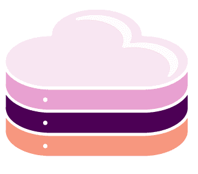
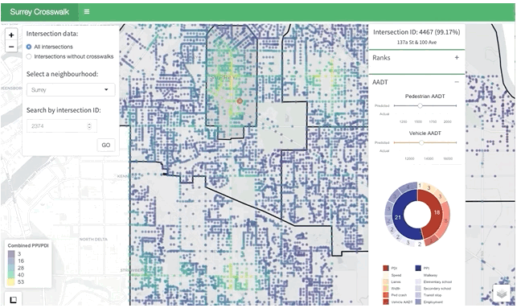
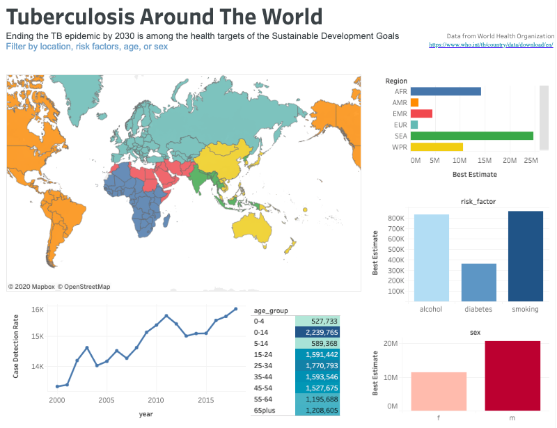
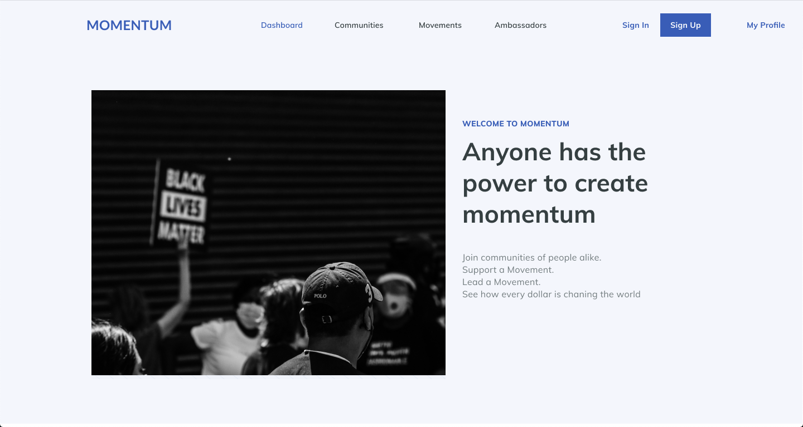

Hello, I'm
Data at 1Password
I believe the best data infrastructure feels invisible — stakeholders just feel empowered. At 1Password, I build that foundation: AI-native tooling, clean financial metrics, and a single source of truth for the teams that shape the business.
// Experience
Building data infrastructure and AI-enabled analytics across fast-moving organizations.
1Password
Senior Data Analyst — Finance
Building finance analytics infrastructure and AI-enabled tooling for FP&A. Defining key metrics — ARR, GRR, churn, contraction, expansion — as a single source of truth that empowers cross-functional stakeholders to make faster, more confident decisions.

Badal.ioSenior BI Engineer
Shipped a generative AI agent in Looker for autonomous financial KPI summaries and led SAP-to-BigQuery modernization with Dataform. Drove a 50% gain in strategic reporting efficiency and reduced data ingestion failures by 35% through custom Airflow monitoring.
Shop Bonsai
Data Analyst
Grew commission rates 30% in under 3 months through marketing analytics for clients including Buzzfeed and Refinery29. Liaised between engineering and business to enhance ETL pipelines, cutting latency by 30% and boosting accuracy by 20%.
Juno College of Technology
Data Analyst
Drove a 20% increase in graduate job placements by surfacing key hiring predictors from 9 years of student and employer data — shaping curriculum and career support strategy.
Technical Skills
Analytics & BI
Data Platforms
Programming
DevOps & Tooling
Education
BSc — Microbiology & Immunology
// Projects
Selected projects across data science, visualization, and product design.


Global TB Dashboard
Interactive dashboard surfacing geographic and temporal trends in global Tuberculosis data across countries and decades.

Momentum
A grassroots crowdfunding platform connecting communities to causes — designed to lower the financial barrier to making an impact.
My work lives at the intersection of AI, data, and finance — building AI-native infrastructure that's precise, efficient, and a single source of truth teams can actually trust. Off the clock, the kitchen gives me that same obsession: a process, a hypothesis, and a result you can taste. Follow along on @gohan.diaryy.
@gohan.diaryy